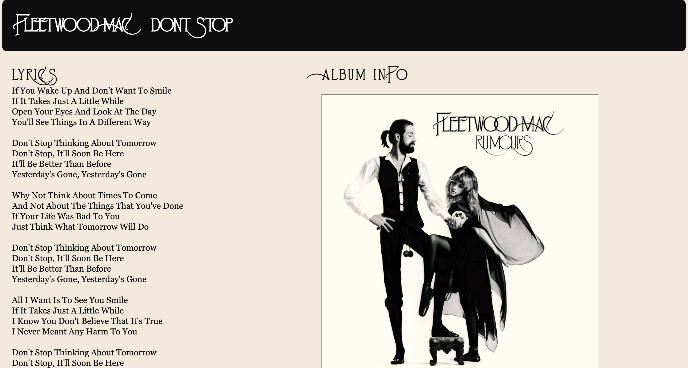
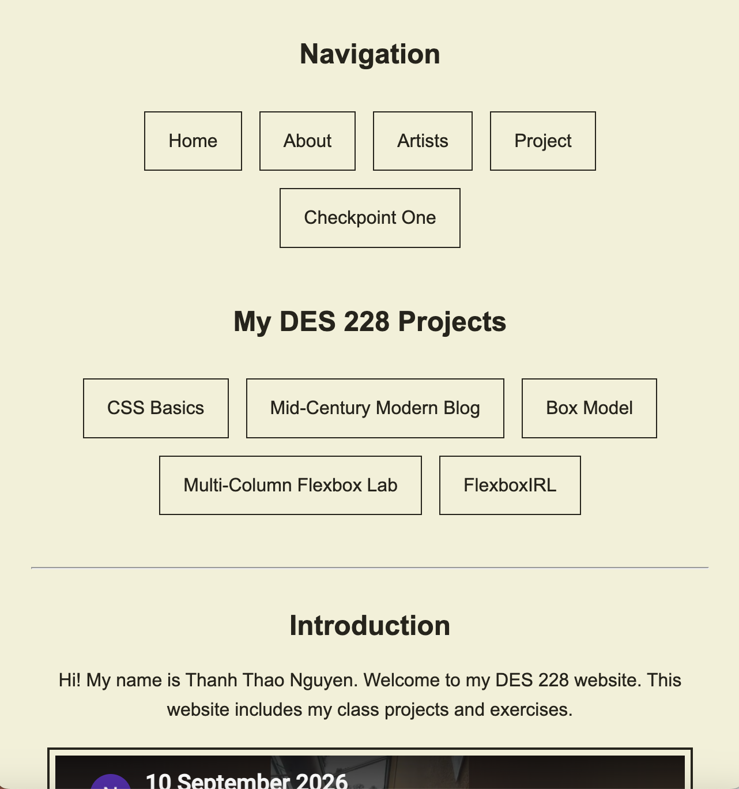
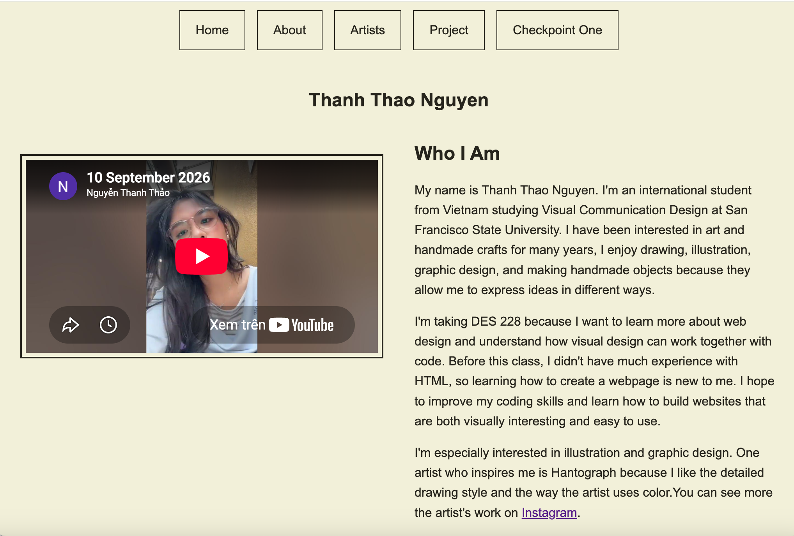
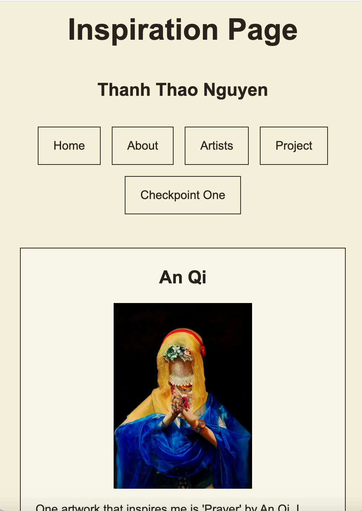

This week, I continued styling the navigation system of my Interactive Sketchbook. I used the root stylesheet to keep the main navigation consistent across my major pages. I kept the same colors, spacing, borders, and hover effect so the pages feel more connected.
For the CSS Practice pages, I used simpler navigation. The first CSS Practice page includes a link back to my Interactive Sketchbook, while page two has a link back to the first CSS Practice page. I think this makes the navigation easier to understand without adding the entire main navigation to every page.
The root stylesheet is useful for styles that should be shared across the main website, while a child stylesheet can control a specific page or section. I am still learning how to organize root and child styles, but the navigation now feels more consistent and easier to use.
Since my original Point of Entry, my website has grown and now has more pages and projects. I changed the homepage to make it easier to understand and navigate. I added clear navigation links so visitors can quickly find the different parts of my Interactive Sketchbook.
I also started using CSS to improve the design of the homepage. I changed the colors, spacing, borders, and navigation buttons. I wanted the page to look simple and organized instead of having too many different styles. I also kept a short introduction because it helps visitors understand what my website is about.
As I add more projects, I think I may need to change the navigation again so it does not become too crowded. I am still learning how to organize the pages and make them look connected. For now, I think the homepage is easier to use than before, but I will continue improving it as my Interactive Sketchbook grows.
Today I published my Interactive Sketchbook using GitHub Pages. At first, most of my website worked, but I had a problem with the pageTwo folder. I checked my files and found that pageTwo was not uploaded correctly to GitHub. I added the files again and tested the website.
After fixing it, the page worked correctly. I learned that the file names, folders, and paths are important when publishing a website. I also learned how to upload my files to GitHub and use GitHub Pages to make my website live.
I worked on the Multi-Column Flexbox Lab using Fleetwood Mac's Rumours album. I practiced using HTML and CSS to organize text and images into columns. I also adjusted the image size and spacing to make the layout look closer to the example.
At first, I had trouble making the image and text look balanced. I tried changing the image width and adjusting the spacing. This helped me understand how Flexbox can organize content and make a webpage look cleaner. I learned that small CSS changes can make a big difference in the layout.

I used Flexbox to improve the navigation of my Interactive Sketchbook. I separated the main navigation from my class projects to make the homepage more organized. I used display: flex, justify-content, and flex-wrap to arrange the links.
I also tested my website by making the browser window smaller. The navigation buttons automatically moved to another row instead of going outside the screen. I learned that Flexbox helps make a website more flexible and easier to use on different screen sizes.

I used Flexbox to improve my About page. I placed my self-portrait video on the left and my biography on the right. I used display: flex, gap, and flex-wrap to organize the layout. I also adjusted the spacing to make the page easier to read. At first, the video and text were not aligned correctly, so I changed the margins and spacing in CSS. I learned how Flexbox can help organize different types of content on a webpage.

I used Flexbox to improve my Inspiration Page. I organized three artists, An Qi, Hmie Art, and Soda Art, into separate cards. I used display: flex, gap, and flex-wrap to arrange the cards and make the page more organized. I also adjusted the image sizes, spacing, and text alignment to make the layout easier to read. I learned how Flexbox can help organize images and text into a clear layout.

I redesigned my Checkpoint One page using a timeline layout. I organized my reflections by date to make my design process easier to follow. I used Flexbox to place reflections and screenshots next to each other. I also added a vertical line, circles, borders, and background colors to separate each entry. At first, my reflections and screenshots were simply placed one after another, but the new layout makes the page more organized. I learned how Flexbox and CSS positioning can work together to improve a webpage.
After reading my peer review feedback, I learned that my website has a clean layout and clear navigation, but some parts could be improved. My partner liked the timeline on my Checkpoint One page and the Flexbox layout on my Inspiration page. However, they suggested making the navigation more consistent and easier to use. I agreed that the Box Model and Multi-Column Flexbox Lab pages needed clearer navigation. First, I added a "Back to Home" button at the top of the Box Model page. Second, I added the same button to the Multi-Column Flexbox Lab page so visitors would not have to scroll to the bottom. Third, I improved the visual hierarchy on my homepage by adjusting the project heading and spacing to make the sections easier to recognize. My partner also suggested adding more colors and different fonts. I decided to keep my original simple style because I wanted the website to look clean and consistent. These changes made my website easier to navigate. While editing, I had a problem with the "Back to Home" link, but I worked on correcting the file path. I learned that small details, such as button placement, spacing, and working links, can make a big difference in the user experience. Receiving feedback helped me see problems that I had not noticed before.